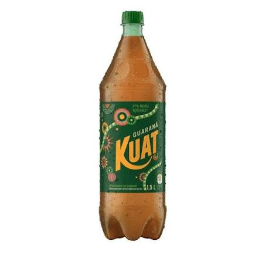
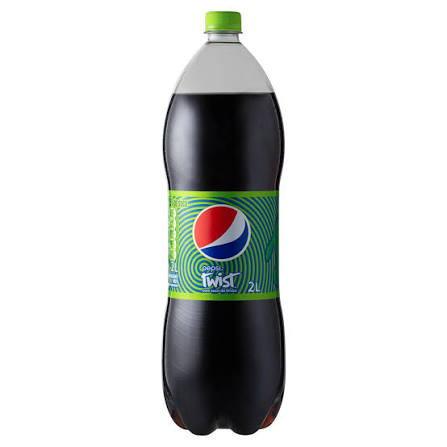
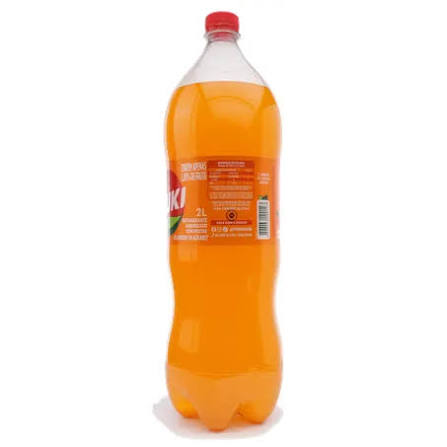

De alguma forma alguém achou que era uma boa ideia fazer um refri que só parece um suco.

Com todo respeito porque eu sei que tem gente que gosta dessa porcaria, só toma uma Pepsi Black ou Coca-Cola com limão que é muito melhor.

Eu não sei se é porque to acostumado com a qualidade da Fruki de Guaraná (que é uma das melhores), mas esse refri é uma das piores coisas que eu já tomei na vida.
| Refrigerante | Nota | País de origem |
|---|---|---|
| Guaraná Kuat | 5/10 | |
| Pepsi Twist | 3/10 | |
| Fruki de Laranja | 1/10 | |
| Fonte: Da juventude. | ||